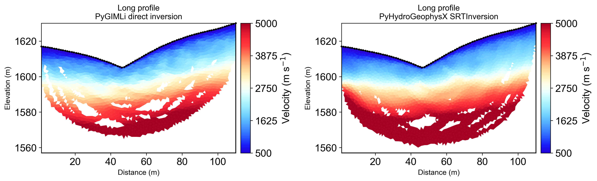
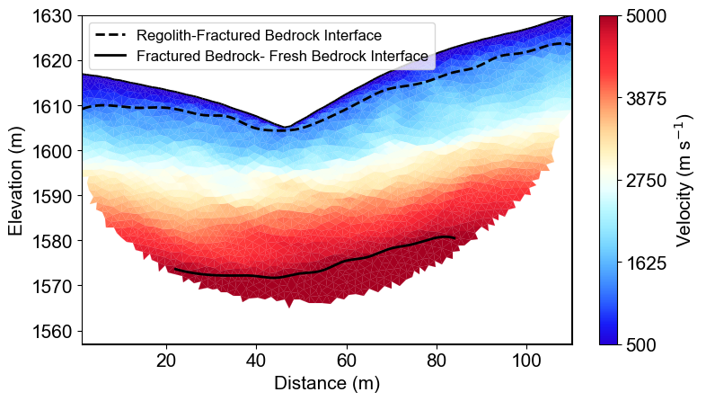
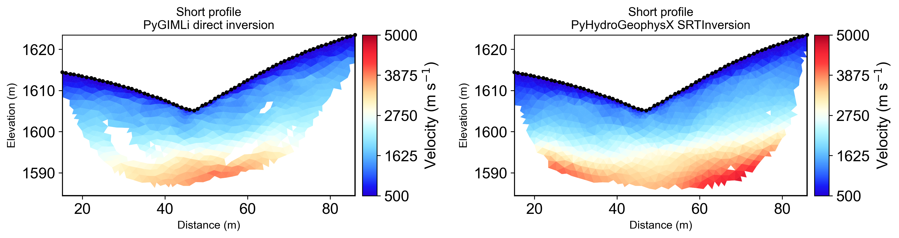

Note
Go to the end to download the full example code.
Ex. Seismic Refraction Tomography (SRT) Inversion and Interface Delineation#
This example demonstrates how to perform a 2D seismic refraction tomography (SRT) inversion and interpret the results to define subsurface structures.
The script focuses on the inversion and post-processing stages of a geophysical workflow. It begins by loading pre-existing synthetic travel time data and then uses tomographic inversion to reconstruct the subsurface P-wave velocity distribution. A key feature demonstrated is the extraction of geological interfaces based on velocity thresholds.
The workflow includes: Loading Synthetic Data: The script loads pre-generated synthetic travel time data for both a long and a short survey profile. Tomographic Inversion: It runs both the original PyGIMLi TravelTimeManager.invert() workflow and the package-level SRTInversion class using matching settings. Comparison: The velocity models from both inversion paths are compared quantitatively and visually. Visualization: The resulting velocity tomograms are plotted, showing the recovered subsurface structure. Interface Extraction: For the long profile, the script uses the extract_velocity_interface function to automatically delineate boundaries between different geological layers (e.g., regolith, fractured bedrock, and fresh bedrock) based on velocity thresholds. Exporting Results: The coordinates of the extracted interfaces are saved to text files, making them available for constraining other models, such as hydrogeological simulations.
from typing import Any
sphinx_gallery_thumbnail_path = ‘auto_examples/images/Ex_SRT_inv_fig_01.png’
import os
import sys
import matplotlib.pyplot as plt
import numpy as np
import pygimli as pg
import pygimli.meshtools as mt
import pygimli.physics.traveltime as tt
from mpl_toolkits.axes_grid1 import make_axes_locatable
from pygimli.physics import TravelTimeManager, ert
# Setup package path for development
try:
# For regular Python scripts
current_dir = os.path.dirname(os.path.abspath(__file__))
except NameError:
# For Jupyter notebooks
current_dir = os.getcwd()
# Add the parent directory to Python path
parent_dir = os.path.dirname(current_dir)
if parent_dir not in sys.path:
sys.path.append(parent_dir)
from PyHydroGeophysX.core.interpolation import ProfileInterpolator, create_surface_lines
from PyHydroGeophysX.core.mesh_utils import (
MeshCreator,
createTriangles,
extract_velocity_interface,
fill_holes_2d,
)
from PyHydroGeophysX.inversion.srt_inversion import SRTInversion
# Import PyHydroGeophysX modules
from PyHydroGeophysX.petrophysics.velocity_models import DEMModel, HertzMindlinModel
output_dir = "results/seismic_example"
os.makedirs(output_dir, exist_ok=True)
SRT_BASE_PARAMS = {
# Parameters shared with ERT-style inversion interfaces
"lambda_val": 50.0,
"method": "cgls",
"max_iterations": 20,
"lambda_rate": 1.0,
"lambda_min": 1.0,
"relativeError": 0.03,
"absoluteUError": 0.001,
# SRT-specific controls
"zWeight": 0.2,
"vTop": 500.0,
"target_chi_squared": 1.0,
}
LONG_SRT_PARAMS = {
**SRT_BASE_PARAMS,
"vBottom": 8000.0,
"model_constraints": (300.0, 10000.0),
}
SHORT_SRT_PARAMS = {
**SRT_BASE_PARAMS,
"vBottom": 5500.0,
"model_constraints": (300.0, 8000.0),
}
def run_custom_srt_inversion(
data_file: Any,
mesh: Any,
inversion_params: Any,
) -> Any:
"""Run package-level SRTInversion with explicit parameter dictionary."""
inversion = SRTInversion(
data_file=data_file,
mesh=mesh,
**inversion_params,
)
return inversion.run()
def compare_models(
direct_model: Any,
custom_result: Any,
) -> Any:
"""Validate direct and package SRT outputs share the same model shape.
Args:
direct_model: Velocity model from the direct PyGIMLi inversion.
custom_result: Result object returned by ``SRTInversion``.
Returns:
The final model extracted from ``custom_result`` as a NumPy array.
"""
custom_model = np.asarray(custom_result.final_model, dtype=float)
if direct_model.shape != custom_model.shape:
raise ValueError(
f"direct/custom model size mismatch: "
f"{direct_model.shape} vs {custom_model.shape}."
)
return custom_model
def plot_direct_vs_custom(
mesh: Any,
direct_model: Any,
custom_model: Any,
direct_coverage: Any,
custom_coverage: Any,
sensors: Any,
output_name: Any,
velocity_limits: Any,
title_prefix: Any,
) -> None:
"""Create side-by-side plots for direct and package SRT inversions.
Args:
mesh: Mesh used for both inversions.
direct_model: Velocity model from the direct PyGIMLi inversion.
custom_model: Velocity model from ``SRTInversion``.
direct_coverage: Coverage values for the direct inversion.
custom_coverage: Coverage values for the package inversion.
sensors: Sensor positions used for plotting.
output_name: Output figure filename.
velocity_limits: Plot color limits for velocity.
title_prefix: Shared title prefix for the comparison figure.
Returns:
None.
"""
velocity_cmap = fixed_cmap if "fixed_cmap" in globals() else "viridis"
fig = plt.figure(figsize=[12.5, 5.5])
ax_direct = fig.add_subplot(1, 2, 1)
pg.show(
mesh,
direct_model,
cMap=velocity_cmap,
coverage=direct_coverage,
ax=ax_direct,
cMin=velocity_limits[0],
cMax=velocity_limits[1],
label="Velocity (m s$^{-1}$)",
orientation="vertical",
)
ax_direct.set_title(f"{title_prefix}\nPyGIMLi direct inversion", fontsize=12)
ax_direct.set_xlabel("Distance (m)", fontsize=11)
ax_direct.set_ylabel("Elevation (m)", fontsize=11)
pg.viewer.mpl.drawSensors(ax_direct, sensors, diam=0.7, facecolor="black", edgecolor="black")
ax_custom = fig.add_subplot(1, 2, 2)
pg.show(
mesh,
custom_model,
cMap=velocity_cmap,
coverage=custom_coverage,
ax=ax_custom,
cMin=velocity_limits[0],
cMax=velocity_limits[1],
label="Velocity (m s$^{-1}$)",
orientation="vertical",
)
ax_custom.set_title(f"{title_prefix}\nPyHydroGeophysX SRTInversion", fontsize=12)
ax_custom.set_xlabel("Distance (m)", fontsize=11)
ax_custom.set_ylabel("Elevation (m)", fontsize=11)
pg.viewer.mpl.drawSensors(ax_custom, sensors, diam=0.7, facecolor="black", edgecolor="black")
fig.savefig(os.path.join(output_dir, output_name), dpi=300, bbox_inches="tight")
## Long seismic profile
### Load seismic data and inversion
long_data_file = os.path.join(
current_dir,
"results",
"SRT_forward",
"synthetic_seismic_data_long.dat",
)
datasrt = tt.load(long_data_file)
TT = pg.physics.traveltime.TravelTimeManager()
mesh_inv = TT.createMesh(datasrt, paraMaxCellSize=2, quality=32, paraDepth = 60.0)
TT.invert(datasrt, mesh = mesh_inv,lam=50,
zWeight=0.2,vTop=500, vBottom=8000,
verbose=1, limits=[300., 10000.])
velocity_data_long_direct = TT.model.array()
coverage_long_direct = TT.standardizedCoverage()
long_custom_result = run_custom_srt_inversion(
data_file=long_data_file,
mesh=mesh_inv,
inversion_params=LONG_SRT_PARAMS,
)
velocity_data_long_custom = compare_models(
velocity_data_long_direct,
long_custom_result,
)
coverage_long_custom = long_custom_result.coverage
### Get parameters for plotting layers
Get coverage and cell positions
cov = TT.standardizedCoverage()
pos = np.array(mesh_inv.cellCenters())
# For layered model visualization
x, y, triangles, _, dataIndex = createTriangles(mesh_inv)
z = pg.meshtools.cellDataToNodeData(mesh_inv, velocity_data_long_direct)
params = {'legend.fontsize': 15,
#'figure.figsize': (15, 5),
'axes.labelsize': 15,
'axes.titlesize':16,
'xtick.labelsize':15,
'ytick.labelsize':15}
import matplotlib.pylab as pylab
pylab.rcParams.update(params)
plt.rcParams["font.family"] = "Arial"
from palettable.lightbartlein.diverging import BlueDarkRed18_18
fixed_cmap = BlueDarkRed18_18.mpl_colormap
fig = plt.figure(figsize=[8,9])
ax1 = fig.add_subplot(1,1,1)
pg.show(mesh_inv, velocity_data_long_direct,cMap=fixed_cmap,coverage = cov,ax = ax1,label='Velocity (m s$^{-1}$)',
xlabel="Distance (m)", ylabel="Elevation (m)",pad=0.3,cMin =500, cMax=5000
,orientation="vertical")
ax1.set_xlabel("Distance (m)", fontsize=15)
ax1.set_ylabel("Elevation (m)", fontsize=15)
ax1.tricontour(x, y, triangles, z, levels=[1200], linewidths=1.0, colors='k', linestyles='dashed')
ax1.tricontour(x, y, triangles, z, levels=[5000], linewidths=1.0, colors='k', linestyles='-')
pg.viewer.mpl.drawSensors(ax1, datasrt.sensors(), diam=0.9,
facecolor='black', edgecolor='black')
fig.savefig(os.path.join(output_dir, 'seismic_velocity_long.tiff'), dpi=300, bbox_inches='tight')
Long Profile Seismic Velocity Model#
The seismic tomography reveals three-layer velocity structure: weathered regolith (blue, <1200 m/s), fractured bedrock (green-yellow, 1200-5000 m/s), and fresh bedrock (red, >5000 m/s). Dashed and solid lines show extracted geological interfaces at 1200 and 5000 m/s respectively.

### Compare direct inversion with SRTInversion (same setup)
plot_direct_vs_custom(
mesh=mesh_inv,
direct_model=velocity_data_long_direct,
custom_model=velocity_data_long_custom,
direct_coverage=coverage_long_direct,
custom_coverage=coverage_long_custom,
sensors=datasrt.sensors(),
output_name="seismic_velocity_long_comparison.tiff",
velocity_limits=(500.0, 5000.0),
title_prefix="Long profile",
)
Long Profile Direct vs Custom Inversion#
The same mesh, regularization, and velocity bounds are used for both inversion paths: PyGIMLi direct inversion and package-level SRTInversion. Both panels are shown with standardized coverage masking.
{kind=link}

%% [markdown] ### Get subsurface structure for hydrologic modeling
Assuming TT.model.array() gives you the velocity values
velocity_data = velocity_data_long_direct
# Call the function with velocity data
# Get subsurface structure (Regolith) for hydrologic modeling
smooth_x1, smooth_z1 = extract_velocity_interface(mesh_inv, velocity_data, threshold=1200,interval = 5)
# Get subsurface structure (Fractured bedrock) for hydrologic modeling
# Here we limit the x range to extract the structure area within the coverage as shown in the figure
smooth_x2, smooth_z2 = extract_velocity_interface(mesh_inv, velocity_data, threshold=5000,interval = 5, x_min=22, x_max=84)
# plot the extracted interfaces withe filled velocity images
filled_cov1 = fill_holes_2d(pos, TT.standardizedCoverage())
fig = plt.figure(figsize=[8,9])
ax1 = fig.add_subplot(1,1,1)
pg.show(mesh_inv, velocity_data_long_direct,cMap=fixed_cmap,coverage = filled_cov1,ax = ax1,label='Velocity (m s$^{-1}$)',
xlabel="Distance (m)", ylabel="Elevation (m)",pad=0.3,cMin =500, cMax=5000
,orientation="vertical")
ax1.set_xlabel("Distance (m)", fontsize=15)
ax1.set_ylabel("Elevation (m)", fontsize=15)
ax1.plot(smooth_x1, smooth_z1, 'k--', linewidth=2, label='Regolith-Fractured Bedrock Interface')
ax1.plot(smooth_x2, smooth_z2, 'k-', linewidth=2, label='Fractured Bedrock- Fresh Bedrock Interface')
ax1.legend(fontsize=12)
np.savetxt(os.path.join(output_dir, 'regolith_interface.txt'), np.c_[smooth_x1, smooth_z1])
np.savetxt(os.path.join(output_dir, 'fractured_bedrock_interface.txt'), np.c_[smooth_x2, smooth_z2])
Automated Interface Extraction#
Two critical geological boundaries extracted from velocity thresholds: regolith-bedrock interface (dashed line, 1200 m/s) and fractured-fresh bedrock interface (solid line, 5000 m/s). Interfaces are smoothed and exported as text files for integration with hydrogeological models.
{kind=link}

%% [markdown] ## Short seismic profiles
short_data_file = os.path.join(current_dir, "data", "Seismic", "synthetic_seismic_data.dat")
ttData = tt.load(short_data_file)
TT_short = pg.physics.traveltime.TravelTimeManager()
mesh_inv1 = TT_short.createMesh(ttData , paraMaxCellSize=2, quality=32, paraDepth = 30.0)
TT_short.invert(ttData , mesh = mesh_inv1,lam=50,
zWeight=0.2,vTop=500, vBottom=5500,
verbose=1, limits=[300., 8000.])
velocity_data_short_direct = TT_short.model.array()
coverage_short_direct = TT_short.standardizedCoverage()
short_custom_result = run_custom_srt_inversion(
data_file=short_data_file,
mesh=mesh_inv1,
inversion_params=SHORT_SRT_PARAMS,
)
velocity_data_short_custom = compare_models(
velocity_data_short_direct,
short_custom_result,
)
coverage_short_custom = short_custom_result.coverage
x1, y1, triangles1, _, dataIndex1 = createTriangles(mesh_inv1)
z1 = pg.meshtools.cellDataToNodeData(mesh_inv1, velocity_data_short_direct)
pos = np.array(mesh_inv1.cellCenters())
filled_cov1 = fill_holes_2d(pos, TT_short.standardizedCoverage())
params = {'legend.fontsize': 15,
#'figure.figsize': (15, 5),
'axes.labelsize': 15,
'axes.titlesize':16,
'xtick.labelsize':15,
'ytick.labelsize':15}
import matplotlib.pylab as pylab
pylab.rcParams.update(params)
plt.rcParams["font.family"] = "Arial"
from palettable.lightbartlein.diverging import BlueDarkRed18_18
fixed_cmap = BlueDarkRed18_18.mpl_colormap
fig = plt.figure(figsize=[8,9])
ax1 = fig.add_subplot(1,1,1)
pg.show(mesh_inv1, velocity_data_short_direct,cMap=fixed_cmap,coverage = TT_short.standardizedCoverage(),ax = ax1,label='Velocity (m s$^{-1}$)',
xlabel="Distance (m)", ylabel="Elevation (m)",pad=0.3,cMin =500, cMax=5000
,orientation="vertical")
ax1.set_xlabel("Distance (m)", fontsize=15)
ax1.set_ylabel("Elevation (m)", fontsize=15)
ax1.tricontour(x1, y1, triangles1, z1, levels=[1200], linewidths=1.0, colors='k', linestyles='dashed')
pg.viewer.mpl.drawSensors(ax1, ttData.sensors(), diam=0.8,
facecolor='black', edgecolor='black')
fig.savefig(os.path.join(output_dir, 'seismic_velocity_short.tiff'), dpi=300, bbox_inches='tight')
Short Profile Multi-Scale Comparison#
Short profile provides enhanced shallow resolution (0-30m depth) with detailed regolith characterization. Higher ray density improves near-surface velocity mapping while sacrificing deeper penetration. The 1200 m/s interface shows excellent agreement with the long profile.

### Short profile: direct vs custom inversion comparison
plot_direct_vs_custom(
mesh=mesh_inv1,
direct_model=velocity_data_short_direct,
custom_model=velocity_data_short_custom,
direct_coverage=coverage_short_direct,
custom_coverage=coverage_short_custom,
sensors=ttData.sensors(),
output_name="seismic_velocity_short_comparison.tiff",
velocity_limits=(500.0, 5000.0),
title_prefix="Short profile",
)
Short Profile Direct vs Custom Inversion#
The short-profile comparison uses the same inversion controls for both methods and shows that the new packaged inversion reproduces the original direct result while preserving shallow structural detail.
{kind=link}

Summary#
This example demonstrated seismic refraction tomography with automated interface extraction for watershed applications. Key results include three-layer velocity structure resolution, interface extraction at 1200 and 5000 m/s thresholds, and direct-vs-custom inversion consistency checks.
The extracted interfaces provide structural constraints for ERT inversions and direct input for hydrogeological models like MODFLOW and ParFlow.